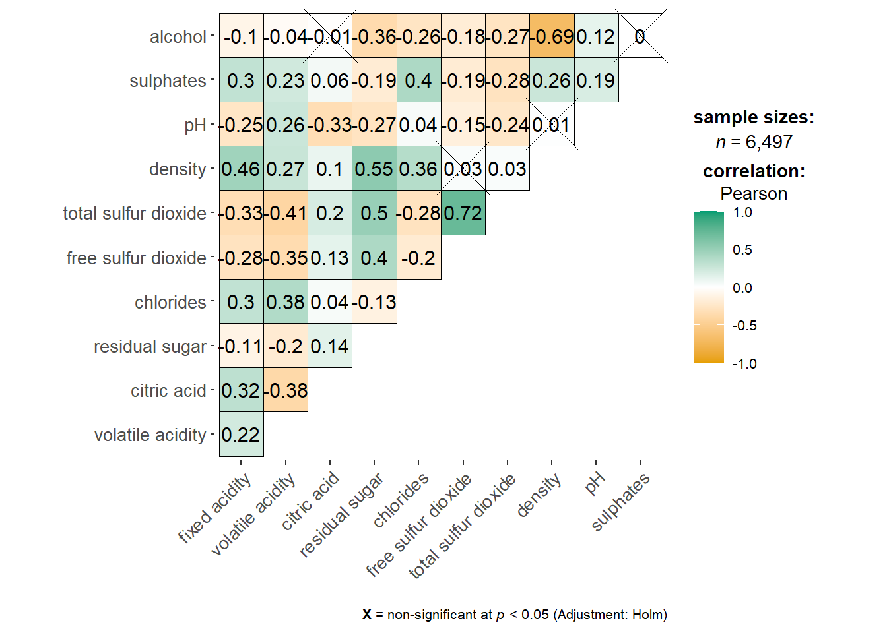
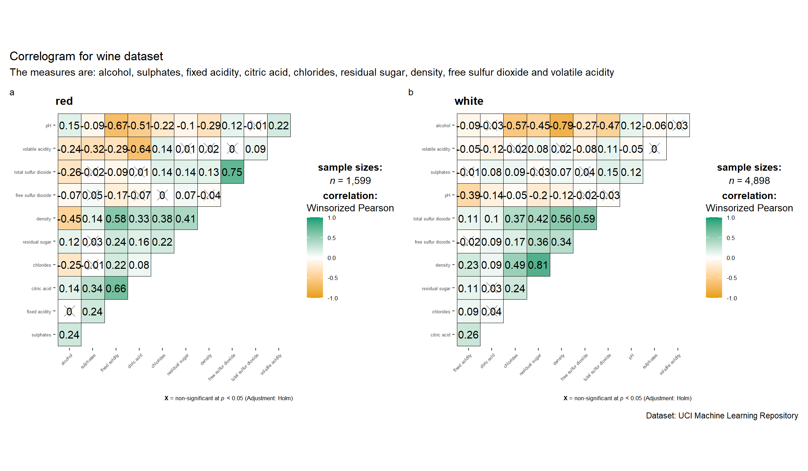
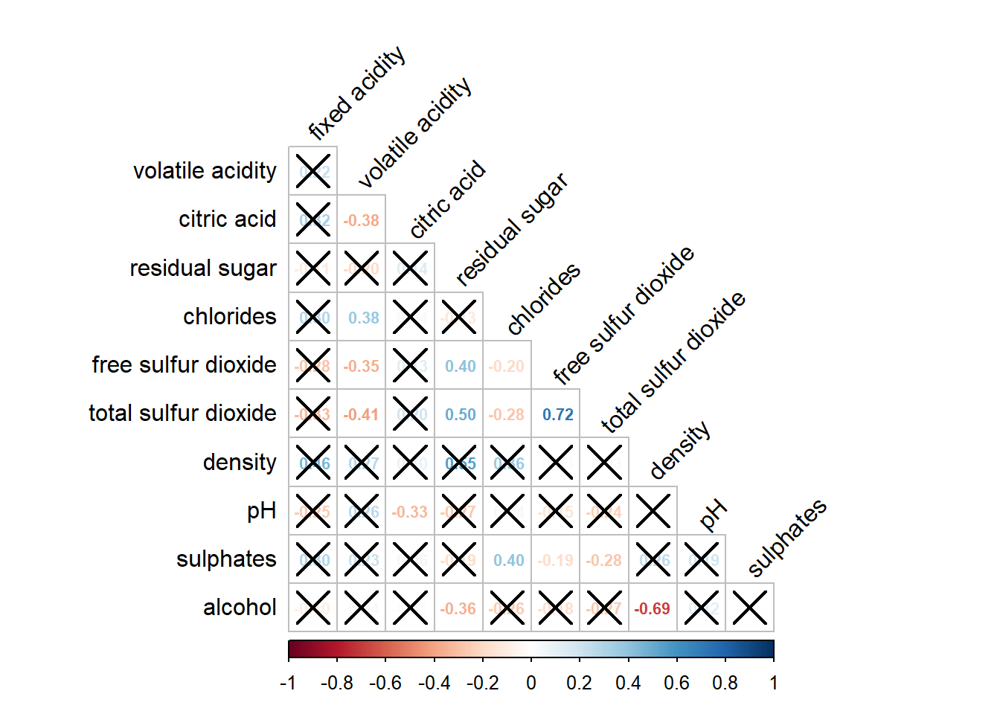
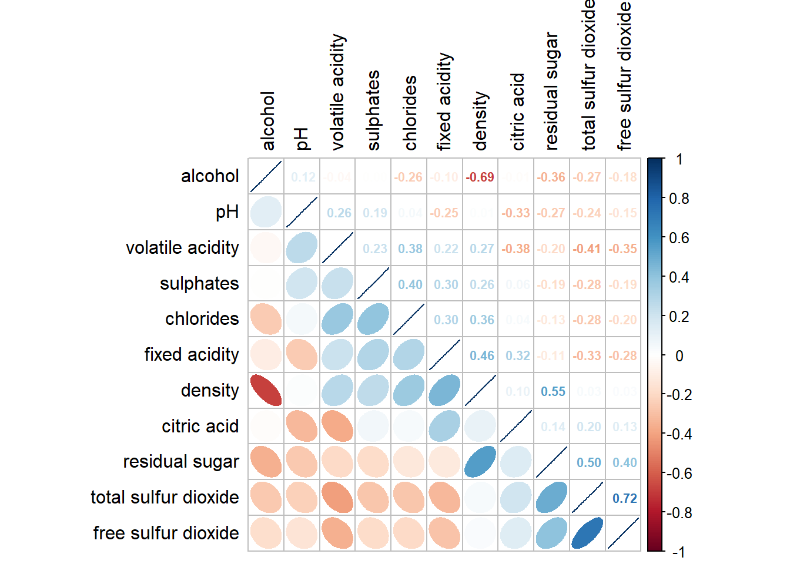

pacman::p_load(corrplot, ggstatsplot, tidyverse)Hands-on_EX05b
6 Visual Correlation Analysis
6.2 Installing and Launching R Packages
6.3 Importing and Preparing The Data Set
6.3.1 Importing Data
wine <- read_csv("data/wine_quality.csv")6.4 Building Correlation Matrix: pairs() method
6.4.1 Building a basic correlation matrix
pairs(wine[,1:11])
pairs(wine[,2:12])
6.4.2 Drawing the lower corner
To show the lower half of the correlation matrix, the upper.panel argument will be used as shown in the code chunk below.
pairs(wine[,2:12], upper.panel = NULL)
Similarly, you can display the upper half of the correlation matrix by using the code chun below.
pairs(wine[,2:12], lower.panel = NULL)
6.4.3 Including with correlation coefficients
To show the correlation coefficient of each pair of variables instead of a scatter plot, panel.cor function will be used.
panel.cor <- function(x, y, digits=2, prefix="", cex.cor, ...) {
usr <- par("usr")
on.exit(par(usr=usr))
par(usr = c(0, 1, 0, 1))
r <- abs(cor(x, y, use="complete.obs"))
txt <- format(c(r, 0.123456789), digits=digits)[1]
txt <- paste(prefix, txt, sep="")
if(missing(cex.cor)) cex.cor <- 0.8/strwidth(txt)
text(0.5, 0.5, txt, cex = cex.cor * (1 + r) / 2)
}
pairs(wine[,2:12],
upper.panel = panel.cor)
6.5 Visualising Correlation Matrix: ggcormat()
One of the major limitation of the correlation matrix is that the scatter plots appear very cluttered when the number of observations is relatively large (i.e. more than 500 observations). To over come this problem, Corrgram data visualisation technique suggested by D. J. Murdoch and E. D. Chow (1996) and Friendly, M (2002) and will be used.
The are at least three R packages provide function to plot corrgram, they are:
6.5.1 The basic plot
ggstatsplot::ggcorrmat(
data = wine,
cor.vars = 1:11,
lab_size = 2.5,
sig_lab_size = 2,
number.cex = 0.6,
ggplot.component = list(
theme(text=element_text(size=10),
axis.text.x = element_text(size = 10),
axis.text.y = element_text(size = 10))))
ggstatsplot::ggcorrmat(
data = wine,
cor.vars = 1:11,
lab_size = 2.5,
sig_lab_size = 2,
number.cex = 0.7,
ggcorrplot.args = list(outline.color = "black",
hc.order = TRUE,
tl.cex = 6),
title = "Correlogram for wine dataset",
subtitle = "Four pairs are no significant at p < 0.05",
ggplot.component = list(
theme(text=element_text(size=10),
axis.text.x = element_text(size = 10),
axis.text.y = element_text(size = 10)))
)
Things to learn from the code chunk above:
cor.varsargument is used to compute the correlation matrix needed to build the corrgram.ggcorrplot.argsargument provide additional (mostly aesthetic) arguments that will be passed toggcorrplot::ggcorrplotfunction. The list should avoid any of the following arguments since they are already internally being used:corr,method,p.mat,sig.level,ggtheme,colors,lab,pch,legend.title,digits.
The sample sub-code chunk can be used to control specific component of the plot such as the font size of the x-axis, y-axis, and the statistical report.
lab_size controls correlation numbers
sig_lab_size controls significance markers
tl.cex controls variable names
ggplot.component controls only theme elements, not matrix values
ggplot.component = list(
theme(text=element_text(size=5),
axis.text.x = element_text(size = 8),
axis.text.y = element_text(size = 8)))6.6 Building multiple plots
grouped_ggcorrmat(
data = wine,
cor.vars = 1:11,
lab_size = 3,
sig_lab_size = 2.5,
grouping.var = type,
type = "robust",
p.adjust.method = "holm",
plotgrid.args = list(ncol = 2),
number.cex = 0.5,
ggcorrplot.args = list(outline.color = "black",
hc.order = TRUE,
tl.cex = 2),
ggplot.component = list(
theme(text=element_text(size=8),
axis.text.x = element_text(size = 5),
axis.text.y = element_text(size = 5))),
annotation.args = list(
tag_levels = "a",
title = "Correlogram for wine dataset",
subtitle = "The measures are: alcohol, sulphates, fixed acidity, citric acid, chlorides, residual sugar, density, free sulfur dioxide and volatile acidity",
caption = "Dataset: UCI Machine Learning Repository"
)
)
6.7 Visualising Correlation Matrix using corrplot Package
6.7.1 Getting started with corrplot
The intensity of the colour or also know as saturation is used to represent the strength of the correlation coefficient. Darker colours indicate relatively stronger linear relationship between the paired variables. On the other hand, lighter colours indicates relatively weaker linear relationship.
wine.cor <- cor(wine[, 1:11])
corrplot(wine.cor)
6.7.2 Working with visual geometrics
corrplot(wine.cor,
method = "ellipse") 
6.7.3 Working with layout
corrplot(wine.cor,
method = "ellipse",
type="lower")
corrplot(wine.cor,
method = "ellipse",
type="lower",
diag = FALSE,
tl.col = "black")
6.7.4 Working with mixed layout
With corrplot package, it is possible to design corrgram with mixed visual matrix of one half and numerical matrix on the other half.
corrplot.mixed(wine.cor,
lower = "ellipse",
upper = "number",
tl.pos = "lt",
diag = "l",
tl.col = "black")
6.7.5 Combining corrgram with the significant test
wine.sig = cor.mtest(wine.cor, conf.level= .95)corrplot(wine.cor,
method = "number",
type = "lower",
diag = FALSE,
tl.col = "black",
tl.srt = 45,
number.cex = 0.7,
p.mat = wine.sig$p,
sig.level = .05)
6.7.6 Reorder a corrgram
By default, the order of attributes of a corrgram is sorted according to the correlation matrix (i.e. “original”). The default setting can be over-write by using the order argument of corrplot(). Currently, corrplot package support four sorting methods, they are:
“AOE” is for the angular order of the eigenvectors. See Michael Friendly (2002) for details.
“FPC” for the first principal component order.
“hclust” for hierarchical clustering order, and “hclust.method” for the agglomeration method to be used.
- “hclust.method” should be one of “ward”, “single”, “complete”, “average”, “mcquitty”, “median” or “centroid”.
“alphabet” for alphabetical order.
corrplot.mixed(wine.cor,
lower = "ellipse",
upper = "number",
tl.pos = "lt",
diag = "l",
order="AOE",
tl.col = "black",
number.cex = 0.7)
6.7.7 Reordering a correlation matrix using hclust
corrplot(wine.cor,
method = "ellipse",
tl.pos = "lt",
tl.col = "black",
order="hclust",
hclust.method = "ward.D",
addrect = 3)